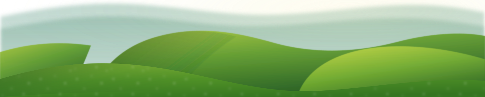

Marko saves your bug reports and UX feedback as pins anchored to real page elements, with annotated screenshots, severities, and comments, so your team can find, fix, and close anything in minutes.
Download for Chrome or Firefox
The full workflow, step by step. No magic, no hand-waving.
One extension replaces screenshot tools, spreadsheets, and endless email threads.
Pins lock onto page elements and stay put through scrolling, resizing, and reloads.
Comment threads with @mentions, image attachments, and resolve states.
Arrows, boxes, pen, text, and a px ruler, captured with OS, browser, and viewport metadata.
Drag reports between severity columns. Filter by status, device, assignee, and due date.
Element, typography, and color inspectors with one-click copy CSS and selector.
Projects are visible only to their members; pin screenshots are access-controlled so nobody outside the team can load them.
Marko ships as an open-source extension for Chrome and Firefox.
Unzip the downloaded file.
Open chrome://extensions in Chrome.
Paste it into the address bar — Chrome blocks direct links to it.
Turn on Developer mode (top-right toggle).
Click Load unpacked and select the unzipped folder.
Pin Marko to your toolbar, open any site, press Alt+M (⌘⇧M on Mac). Done.
Open about:debugging in Firefox.
Click This Firefox → Load Temporary Add-on…
Select the downloaded marko-firefox.xpi file.
Temporary add-ons are removed on restart — reinstall after each browser restart.
Pin Marko to your toolbar, open any site, press Alt+M. Done.
Marko ships with a hosted backend, so you sign up and start reviewing. No account with any cloud provider required.
Sign up with an email and password. No Google or third-party identity provider in the loop.
Zero analytics or tracking. Nothing leaves your device unless you share.
Pins, threads, and kanban state sync through the project backend so your whole team sees one board.